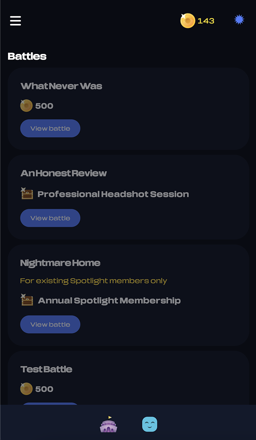
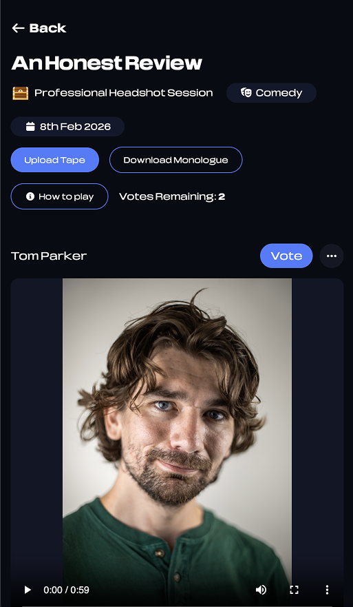
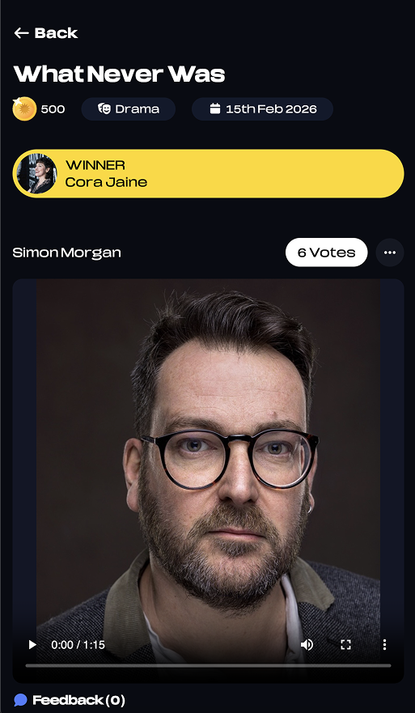
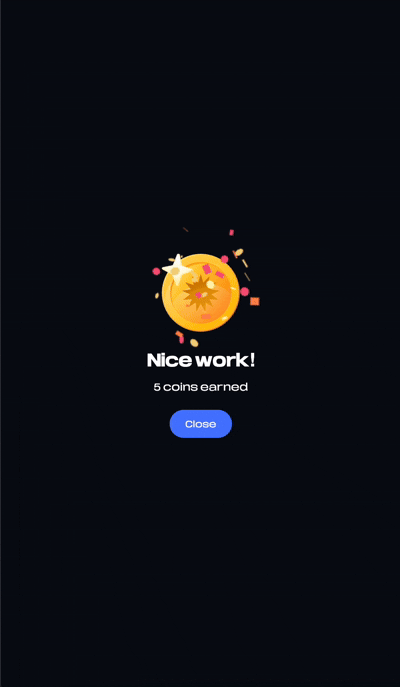

Self Tape Battle
Founder · Product Designer · Developer
Self Tape Battle is the world's first competitive acting app. Compete, vote, and win while building a diverse portfolio visible to industry professionals.




TL;DR
Role & Scope
Why?
As a former child actor, I experienced first-hand how demanding and unforgiving the industry can be. The financial strain, the repeated disappointments, and the constant pressure are still common concerns shared by actors today.
The cost of maintaining an acting career is high. Headshot sessions can start at £300, memberships are expensive, and travelling to auditions quickly becomes a burden.
Self Tape Battle was created as an ecosystem designed to address several of these challenges at once. Actors are rewarded for developing their skills while building a diverse portfolio that can be seen by industry professionals. The platform offers consistent positive reinforcement, a sense of progress, and a space for continuous improvement. It also introduces an element of enjoyment within a demanding industry by bringing gamification into the acting space.
Validation
Before building anything, I validated the idea with actors in a Facebook group. The response was encouraging. Many felt the concept was refreshing and more engaging than the existing platforms currently available to them.
This early feedback gave me the confidence to move forward with development.
Core Concept
I began by mapping out the core concept, which was intentionally simple. Weekly acting battles with a prize awarded at the end.
The name Self Tape Battle felt natural and fitting for a healthy competitive environment. From there, I leaned into world-building. I imagined actors in a virtual arena and began shaping the language of the platform around that idea. Battles, fighters, champions, coins, and treasure chests became part of the experience, and the app itself was referred to as "The Arena".
Some of this inspiration came from virtual worlds I enjoyed growing up, such as Yoville, along with shows like Game of Thrones and The Hunger Games.
Weekly Flow and Retention Loop
I designed a clear weekly cycle.
Every Sunday, a new battle is posted. Actors have until the following Sunday to learn the monologue and submit their entry. During the week, I focus on marketing efforts, resolving bugs, responding to customer queries, and continuing to improve the product.
Actors are generally quick to learn scripts, so a week felt like the right balance. It provides enough time for preparation while allowing users to fit Self Tape Battle around their schedules. At the same time, it creates a natural rhythm that encourages users to return consistently.
Designing the Game Mechanics
This is a peer-led competition platform. Without engagement, it would not function.
One of the earliest questions I asked myself was simple. If this is a competition, why would an actor vote for someone else?
To encourage meaningful participation, I created a coin-based reward system.
- Each vote gives an actor 1 coin
- If the entry they voted for wins, they receive double coins
This encourages users not only to vote, but to vote with intention.
I also introduced a rule to help maintain balanced engagement. If there are already 5 entries uploaded in a battle, users must watch and vote for at least one before uploading their own entry. This ensures there are always votes being placed and helps sustain activity across the platform. I chose 5 as it felt like a reasonable number for someone to watch and connect with at least one performance.
Coin Economy
Other actions that reward coins include:
Signing up
Actors receive 100 coins so they do not feel like they are starting from nothing.
Entering a battle
Actors receive 5 coins.
These smaller rewards help build momentum and maintain motivation.
Preventing Abuse
To reduce the risk of the system being exploited:
- Each actor has a maximum of 5 votes per battle
- This means the number of coins that can be earned from voting is limited
I have considered allowing unlimited votes in the future while keeping the coin reward capped. This would allow more freedom of engagement without affecting balance.
Fair Voting System
I made several deliberate decisions to keep voting as fair as possible.
Vote counts are hidden until the battle ends. This encourages actors to vote based on genuine performance rather than popularity.
Once an entry is voted for, the vote cannot be undone. This prevents last-minute changes before the deadline.
Initially, the vote button was positioned too close to the play button. Some users mentioned they were voting by accident. I moved the vote button to the header of the entry card to reduce this issue. I am also considering adding a short timer after a vote is cast so users have a few seconds to undo if needed.
Tone of Voice and Positive Reinforcement
From my experience in the acting industry, feedback, especially positive feedback, has a significant impact on motivation and confidence.
Because of this, it was important for the app and brand to maintain an encouraging tone throughout. Actions such as signing up, entering a battle, voting, and winning are all acknowledged in a positive way.
The aim is to make actors feel valued and appreciated for the effort and talent they bring to the platform.
UI and UX Direction
Visually, I chose a dark theme to give the app a more cinematic feel. Brighter elements such as coins, confetti, and rewards stand out more clearly against darker backgrounds, making achievements feel more impactful.
I aimed for a clean and sleek layout, allowing animations to carry most of the visual energy. I wanted to strike a balance between playful and professional. The app is designed for actors of all ages, so it was important that no one felt excluded by the style or tone.
Since this is a new type of platform, clarity and usability were my highest priorities. I focused on making sure users always know how to proceed with each action without needing prompts or unnecessary steps.
I also drew inspiration from apps like Duolingo. As a user myself, I appreciate how it incorporates gamification elements in a simple and engaging way.
Community-Led Features
As the platform began to grow, actors started asking for a way to give each other feedback.
In response, I built a feedback feature that allows users to comment on each other's entries. This strengthened the sense of community and made the platform feel more supportive and collaborative.
Responding to Actor Feedback: Fairness & Visibility
After several battles, I began receiving consistent feedback from actors about the voting and submission experience. Two main concerns stood out:
- Requiring actors to vote before uploading felt unfair, as earlier entries naturally gained more exposure and votes simply by being first.
- Later entries were getting less visibility because they appeared further down the list, especially on mobile where larger video cards meant fewer entries were visible at once.
This highlighted a key tension: encouraging engagement vs. maintaining a level playing field.
To address this, I decided to trial a set of changes focused on improving fairness, discovery, and participation.
1) Rethinking the voting requirement
I'm exploring removing the forced voting step when there are more than five entries. The goal is to see whether actors will continue to engage organically, without the friction of a mandatory action before submitting. This is a balance between maintaining interaction and reducing perceived barriers.
2) Separating entry and voting phases
Another potential solution is introducing a defined entry period followed by a dedicated voting period. This would allow:
- All actors to submit without time pressure
- Voting to begin simultaneously for every entry
- A fairer environment where performance, not upload timing, drives results
3) Improving discovery through new viewing modes
The current interface displays entries in a vertical list sorted by upload time, with large video cards that dominate the screen — particularly on mobile. This can unintentionally favour early submissions.
To improve visibility and reduce time-based bias, I'm designing three alternative viewing options:
Spotlight Shuffle View
One entry appears at a time, with a shuffle option to randomise the next video. This encourages discovery and removes the advantage of posting earlier.
Grid View
A multi-card layout (e.g. three columns) allowing users to see several entries at once and browse more efficiently.
Enhanced List View with Sorting
Keeping the existing layout but adding sorting options, such as by entry time, to give users more control over how they explore submissions.
Challenges & Constraints
Building Self Tape Battle alone was both rewarding and challenging. I enjoy working in a team environment, so managing multiple roles simultaneously required a lot of discipline and adaptability.
Revenue was another key consideration. I wanted to remove financial barriers for actors and keep the core experience free. This meant exploring alternative revenue streams such as sponsorships, community events, and the potential for premium memberships in the future, without taking away from the core value of the platform.
Designing for a brand new category was also a challenge. There was no direct reference point or existing model to follow. However, this also gave me the freedom to draw inspiration from different sources and shape something original.
Another important decision was designing the coin mechanism and setting a withdrawal threshold. It was important to ensure the system did not feel too tedious for users to earn enough coins, while also making sure it was not too easy in a way that could lead to losses for the company.
Outcomes & Impact
We have seen a fantastic level of engagement across the platform, along with strong positive feedback on the interface, user experience, and overall concept. Actors have described the app as "fun", "genius", and "enticing".
We had 70 sign-ups during the beta phase, which increased to 240 within one month after launch. On average, around 15 actors enter each battle. We have also grown to over 880 Instagram followers through a combination of paid ads, organic user-generated content, and word of mouth, with many actors expressing excitement for the future of the platform.
Multiple actors return for consecutive battles, share their profiles and entries on social media, and use the feedback feature to support one another. Many have expressed that they feel their thoughts and suggestions are being listened to, which has increased overall satisfaction.
These signals suggest a strong early product-market fit.
What I Learned
You do not need to know everything at the beginning. Learn, iterate, and adapt as you go.
Striking the right balance between visual appeal and functionality is essential.
Careful planning helps prevent avoidable mistakes and overlooked issues during the design and build phases.
The product is not for you, it is for your users. Gather feedback, stay objective, and be willing to pivot when necessary.